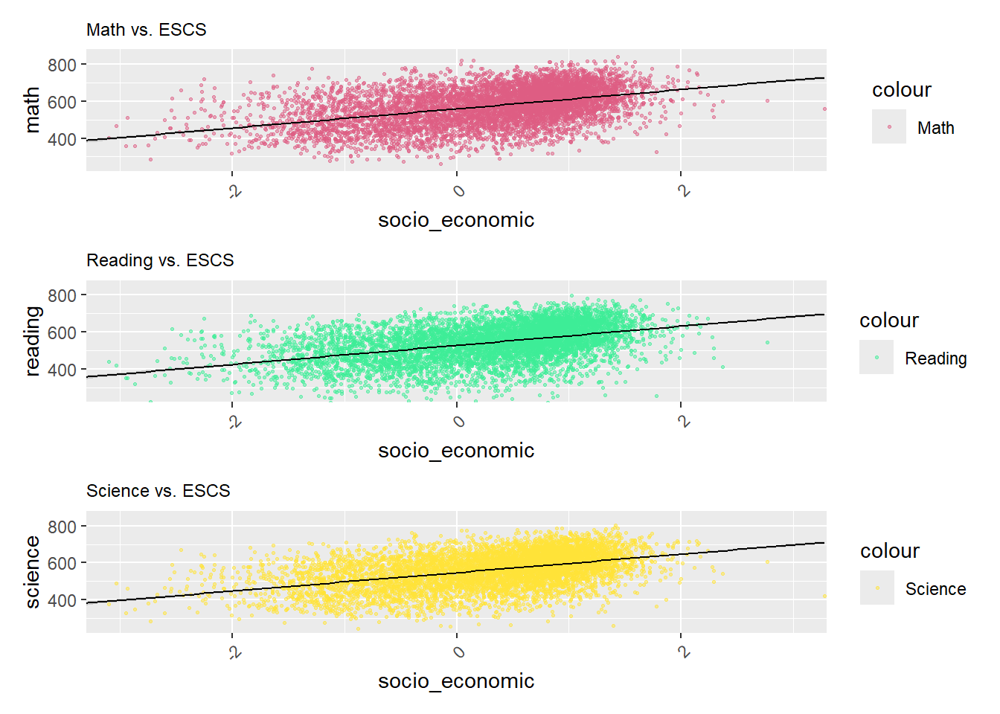

pacman::p_load(tidyverse, haven, patchwork, ggthemes)Take-home Exercise 2: DataVis Makeover
1 Project Objectives
In this Take-home Exercise 2, I’ve selected a peer’s Take-home Exercise 1 submission and evaluated its charts for clarity and aesthetics. My objective is to conduct a thorough critique of the design and visual representation of the chosen submission. Drawing upon the principles of data visualization design covered in Lessons 1 and 2, I will draft a blueprint for an alternative design. Following this, I’ll utilize ggplot2, along with its extensions and the tidyverse packages, to revamp the original design, aiming to improve its visual impact and enhance clarity.
2 Data Preparation
2.1 Importing packages
In this take home exercise we are going to utilise several package
- Tidyverse (to wrangle and plot our data)
- Haven (to read our dataset from sas data type)
- Patchwork (to plot multiple plot in the same figure)
2.2 Importing dataset
Importing the data in sas data type
stu_qqq <- read_sas('data/cy08msp_stu_qqq.sas7bdat')Filtering the data to singapore
stu_qqq_SG <- stu_qqq %>% filter(CNT == "SGP")Export the filtered dataset to rds to ease further data importing
write_rds(stu_qqq_SG, 'data/stu_qqq_SG.rds')Read the exported rds
stu_qqq_SG <- read_rds('data/stu_qqq_SG.rds')2.3 Variable Preparations
We’re giving the original visualization a makeover, sticking to the same data my classmate picked. That means I’ll focus on student performance in math, reading science, as well as school identity, gender and social economic.
schoolID(Renamed from CNTSCHID)gender(Renamed from ST004D01T)math(Average of 10 math scores)science(Average of 10 science scores)reading(Average of 10 reading scores, renamed from ‘read’)social_economic(Renamed from ESCS)stu_filtered <- stu_qqq_SG %>% mutate(math = rowMeans(select(stu_qqq_SG, PV1MATH,PV2MATH,PV3MATH,PV4MATH,PV5MATH,PV6MATH,PV7MATH,PV8MATH,PV9MATH,PV10MATH)), science = rowMeans(select(stu_qqq_SG, PV1SCIE,PV2SCIE,PV3SCIE,PV4SCIE,PV5SCIE,PV6SCIE,PV7SCIE,PV8SCIE,PV9SCIE,PV10SCIE)), reading = rowMeans(select(stu_qqq_SG, PV1READ,PV2READ,PV3READ,PV4READ,PV5READ,PV6READ,PV7READ,PV8READ,PV9READ,PV10READ)) ) %>% select(CNTSCHID,ST004D01T,math,science,reading,ESCS) %>% rename(c(schoolID = "CNTSCHID", gender = "ST004D01T", socio_economic = "ESCS")) %>% mutate(gender = recode(gender, "1" = "Female", "2" = "Male")) stu_filtered$schoolID <- as.factor(stu_filtered$schoolID) stu_filtered$gender <- as.factor(stu_filtered$gender)
3 Design I
3.1 Original Design
The initial design is presented here:

Using histograms to visualize the distribution of scores by gender is a great approach. Nonetheless, there are several enhancements that could be implemented to improve their effectiveness.
3.2 Alternative Design
3.2.1 Sketch for Alternative Design
3.2.2 Headings for Individual Charts
We intend to assign titles to each graph to distinguish between the female and male graphs instead of using numerical identifiers such as 1 and 2.
3.2.3 Mean and Median Markings
Adding lines to denote the mean and median to enhance the comparison between the two graphs.
3.2.4 Enhancements in Appearance
The grey bars, lacking clear borders, may confuse readers when interpreting the graph. We plan to enhance clarity by adjusting the color of the bars and introducing distinct borders.
3.3 Final Design
Show the code
# Assign the dataset to be analyzed
eda_data <- stu_filtered
# Calculate mean and median math scores by gender
stats <- data.frame(
gender = as.factor(c('Female', 'Male')),
mean = c(
mean(stu_filtered$math[stu_filtered$gender == "Female"]),
mean(stu_filtered$math[stu_filtered$gender == "Male"])
),
median = c(
median(stu_filtered$math[stu_filtered$gender == "Female"]),
median(stu_filtered$math[stu_filtered$gender == "Male"])
)
)
# Create ggplot for math scores by gender
ggplot(data = eda_data, aes(x = math)) +
geom_histogram(bins = 20, color = 'grey50', fill = 'lightblue') +
facet_wrap(~gender) +
geom_vline(data = stats, mapping = aes(xintercept = mean), color = "red") +
geom_vline(data = stats, mapping = aes(xintercept = median), color = "blue") +
annotate(
'text',
x = Inf, y = Inf, hjust = 1, vjust = 2.1, label = paste("mean"), color = "red"
) +
annotate(
'text',
x = Inf, y = Inf, hjust = 1, vjust = 1, label = paste("median"), color = "blue"
) +
ggtitle("Math Scores by Gender")4 Design II
4.1 Original Design
The initial design is presented here:

The main goal is to analyze and compare the score distributions across schools for each subject, box plots would serve as highly effective visual tools. However, using a heatmap to visualize this objective would make it difficult for readers to interpret the data.
4.2 Alternative Design
4.2.1 Sketch for Alternative Design
4.2.2 Alternative chart type for better analysis
To analyze and compare the score distributions across schools for each subject, box plots would serve as highly effective visual tools. Boxplots are effective for summarizing data distributions, identifying outliers, facilitating comparisons between groups, and offering a space-efficient and intuitive visualization of statistical information. Introducing a heatmap to visualize this objective would complicate data analysis for readers.
4.3 Final Design
Show the code
# Compute average scores in math, science, and reading
average_math <- mean(stu_filtered$math)
average_science <- mean(stu_filtered$science)
average_reading <- mean(stu_filtered$reading)
# Compute absolute differences between subject mean scores and overall averages
stu_filteredsg <- stu_filtered %>%
group_by(schoolID) %>%
mutate(averagemath = abs(mean(math) - average_math),
averagescience = abs(mean(science) - average_science),
averagereading = abs(mean(reading) - average_reading)) %>%
select(schoolID, averagemath, averagescience, averagereading) %>%
unique()
# Create ggplot objects for average grade differences in math, science, and reading
Boxplot_Math <- ggplot(data = stu_filteredsg, aes(y = averagemath)) +
geom_boxplot(width = 0.1, fill = "#B660CD", alpha = 0.4) +
stat_boxplot(geom = "errorbar", width = 0.05) +
stat_summary(aes(x = 0),
geom = "point",
fun.y = "mean",
colour = "red",
size = 2) +
scale_y_continuous(NULL, limits = c(0, 220)) +
scale_x_continuous("Math", breaks = NULL) +
theme_minimal()
Boxplot_Science <- ggplot(data = stu_filteredsg, aes(y = averagescience)) +
geom_boxplot(width = 0.1, fill = "#6F2DA8", alpha = 0.4) +
stat_boxplot(geom = "errorbar", width = 0.05) +
stat_summary(aes(x = 0),
geom = "point",
fun.y = "mean",
colour = "red",
size = 2) +
scale_y_continuous(NULL, limits = c(0, 220)) +
scale_x_continuous("Science", breaks = NULL) +
theme_minimal()
Boxplot_Reading <- ggplot(data = stu_filteredsg, aes(y = averagereading)) +
geom_boxplot(width = 0.1, fill = "#E4A0F7", alpha = 0.4) +
stat_boxplot(geom = "errorbar", width = 0.05) +
stat_summary(aes(x = 0),
geom = "point",
fun.y = "mean",
colour = "red",
size = 2) +
scale_y_continuous(NULL, limits = c(0, 220)) +
scale_x_continuous("Reading", breaks = NULL) +
theme_minimal()
# Combine the three plots horizontally with appropriate titles
(Boxplot_Math + labs(title = "Subject Scores Across School")) | Boxplot_Science | Boxplot_Reading 5 Design III
5.1 Original Design
The initial design is presented here:

Utilizing scatterplots to visualize the correlation of subject performance with the Economic, Social, and Cultural Status (ESCS) is an excellent approach. However, there are several enhancements that could be implemented to enhance their effectiveness.
5.2 Alternative Design
5.2.1 Sketch for Alternative Design
5.2.2 Enhanced Scatterplot and Line Color Differentiation
Arranging the three graphs in a easier way to improve readability for readers. Enhancing the scatterplot and line colors distinctly will further aid readers in analyzing the data.
5.3 Final Design
Show the code
theme_setting <- theme(
plot.title = element_text(size = 9),
plot.subtitle = element_text(size = 8),
plot.caption = element_text(size = 8),
axis.text.x = element_text(angle = 45, hjust = 1)) # Adjust for better readability
# Adjust the alpha and size in geom_point for transparency and smaller points
p1 <- ggplot(data=stu_filtered, aes(x= socio_economic, y=math, color = "Math")) +
geom_point(alpha = 0.5, size = 0.5) +
geom_smooth(method=lm, linewidth=0.5, color="black") +
coord_cartesian(xlim=c(-3,3), ylim=c(250,850)) +
ggtitle("Math vs. ESCS") +
theme_setting +
scale_color_manual(values = c("Math" = "#DE5D83"))
p2 <- ggplot(data=stu_filtered, aes(x= socio_economic, y= reading, color = "Reading")) +
geom_point(alpha = 0.5, size = 0.5) +
geom_smooth(method=lm, linewidth=0.5, color="black") +
coord_cartesian(xlim=c(-3,3), ylim=c(250,850)) +
ggtitle("Reading vs. ESCS") +
theme_setting +
scale_color_manual(values = c("Reading" = "#3DED97"))
p3 <- ggplot(data=stu_filtered, aes(x= socio_economic, y= science, color = "Science")) +
geom_point(alpha = 0.5, size = 0.5) +
geom_smooth(method=lm, linewidth=0.5, color="black") +
coord_cartesian(xlim=c(-3,3), ylim=c(250,850)) +
ggtitle("Science vs. ESCS") +
theme_setting +
scale_color_manual(values = c("Science" = "#FFE338"))
p1 / p2 / p3